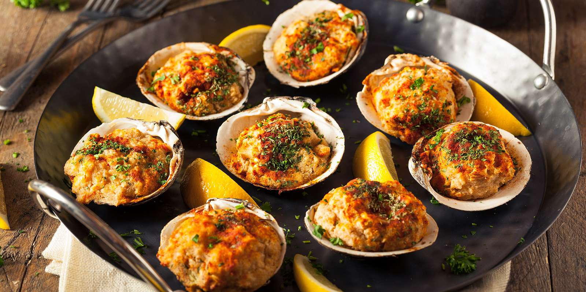

Clams Casino

Description
An appetizer dish, consisting of clams"on the half shell", topped with breadcrumbs, bacon, and green peppers.
Ingredients
- 24 Clams
- Bacon (6 ounces)
- Breadcrumbs (1 Cup)
- 3 Shallots
- 3 Green Onions
- 3 Garlic cloves
- 1/4 cup Dry white wine
- 1/2 cup Parsley
- Butter (8 ounces)
- Salt and pepper
- Lemon wedges (for serving)
Steps
- For the breadcrumbs Cook 6 ounces diced bacon over medium-high heat, stirring, until fat has rendered and bacon is browned and crisp, about 7 minutes. Lower heat if skillet gets too hot and begins to smoke.
- Stir in bread crumbs to evenly coat in bacon fat and cook, stirring and tossing, until bread crumbs are lightly toasted. Transfer to a bowl to cool. Season with salt and pepper.
- For the clams In a large sauté pan, cook 2 ounces diced bacon over medium-high heat until fat has rendered and bacon is lightly browned and crisp, about 3 minutes. Stir in shallots, garlic, and red pepper flakes and cook, stirring, until shallots have softened, about 4 minutes.
- Add white wine and clams, cover, and cook, checking occasionally, until the clams begin to open. Transfer opened clams to a large bowl to cool, continuing to cover sauté pan and checking frequently for newly opened clams. Continue until last clams have opened.
- Uncover sauté pan and cook, stirring, until wine and clam liquid have evaporated and the shallot-bacon mixture has become jammy. Remove from heat and allow to cool.
- In a medium bowl, stir shallot-bacon mixture and 1/4 cup parsley into softened butter until thoroughly incorporated. Season lightly with salt and pepper.
- Working one at a time, pry off top shell of each clam and discard, making sure no shell fragments from the hinge fall into the clam. Free each clam from the bottom shell, then set back in the bottom shell and transfer to a rimmed baking sheet.
- Using a butter knife, pack clam butter all around and over each clam, sealing each into the bottom shell. Sprinkle a small amount of bacon bread crumbs on top of each clam, pressing lightly to adhere. At this point, you can cover the baking sheet with plastic and refrigerate clams for up to 1 day before cooking.
- When ready to serve, place clams in a 450°F oven and cook until butter is melted and clams are fully heated through, 3 to 5 minutes. Stir remaining 1/4 cup parsley into bread crumbs, then sprinkle a generous amount on top of each clam. Return to oven for 1 minute to warm bread crumbs, then serve right away with lemon wedges.